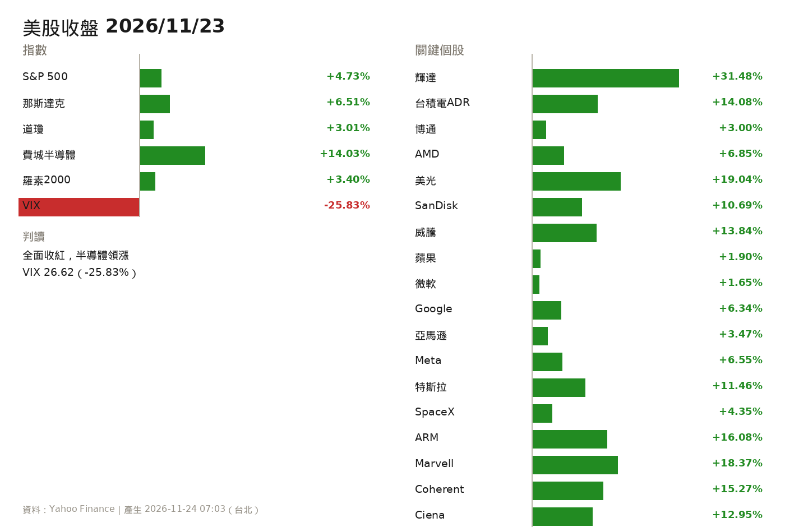
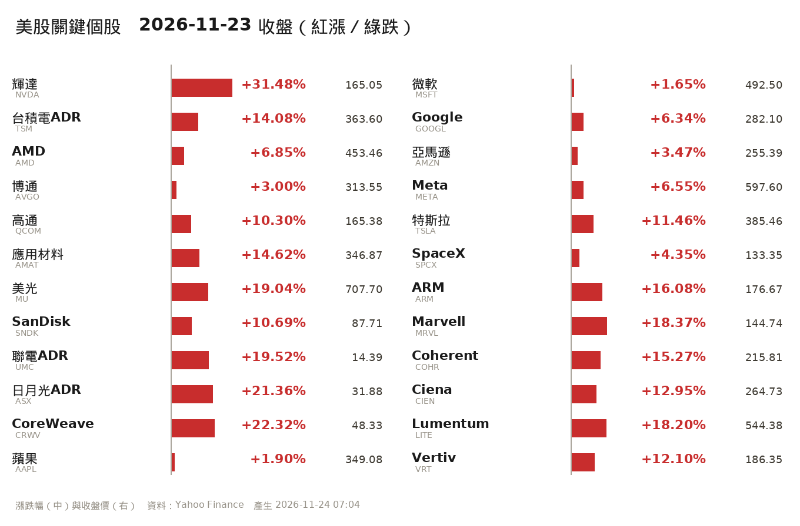
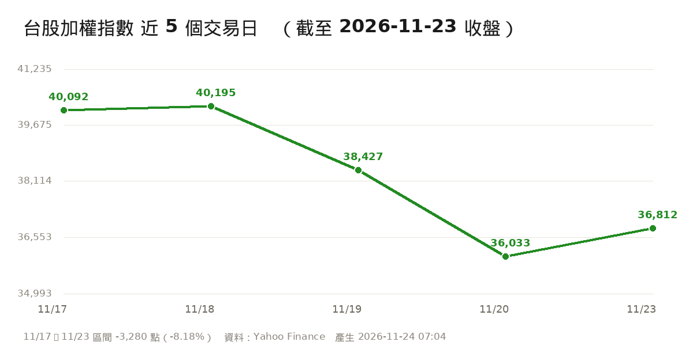
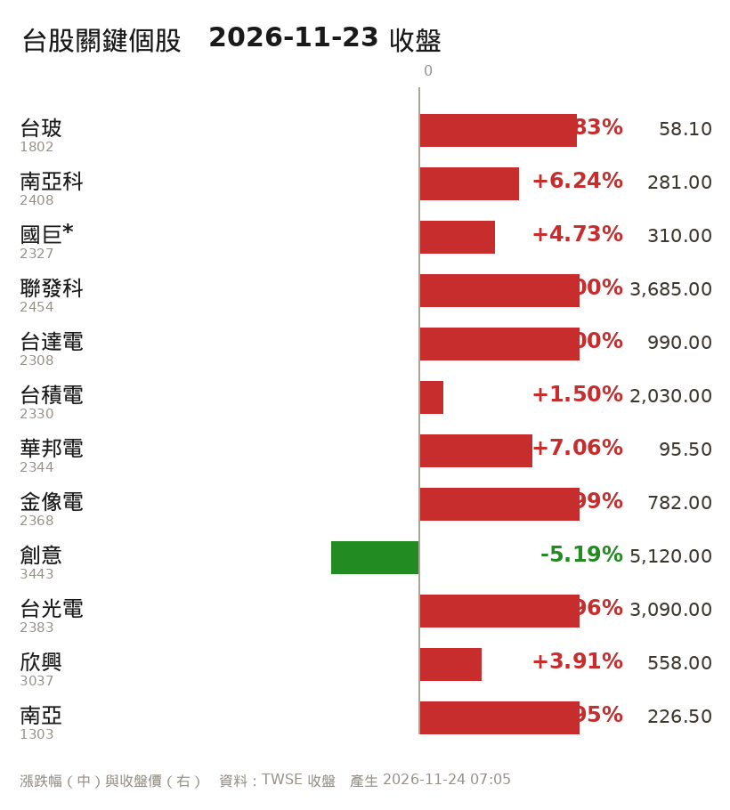
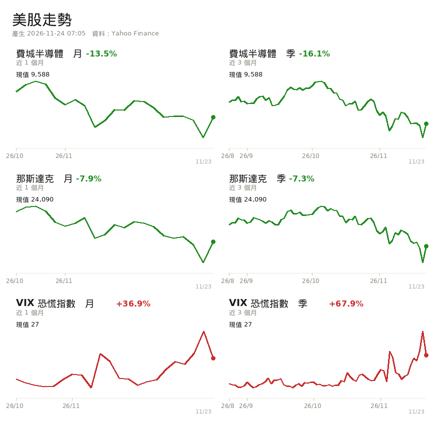
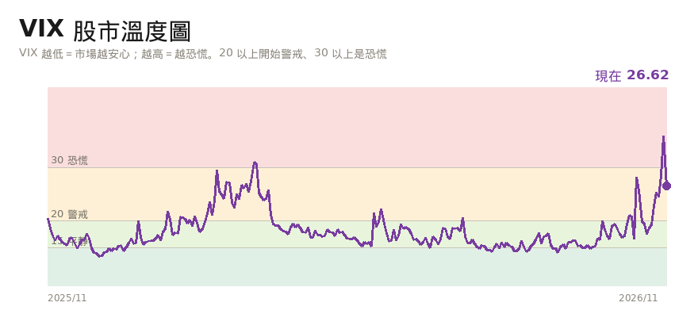
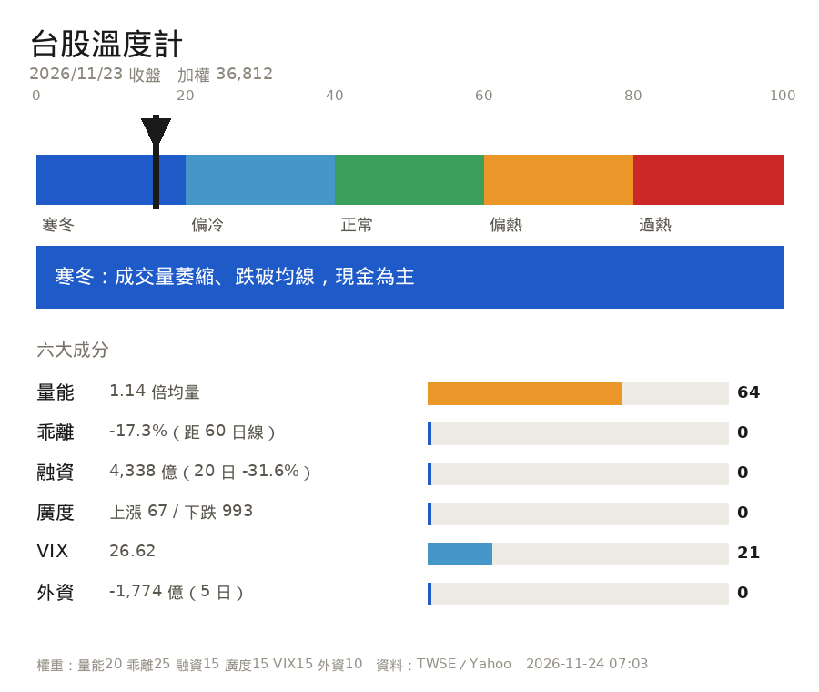
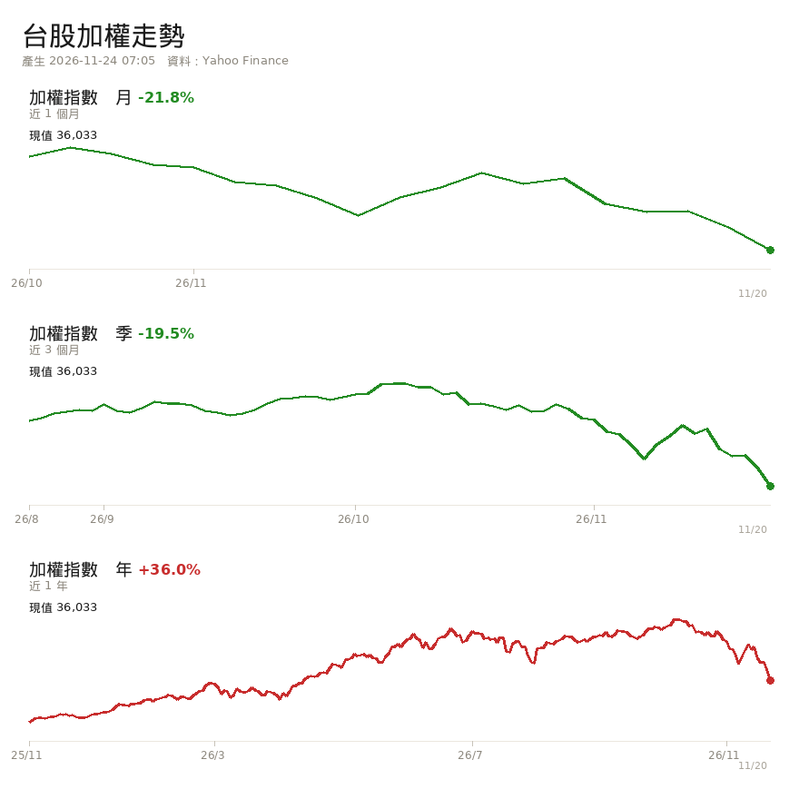

2026-11-24 投資日報2026-11-24 07:12
產生時間：2026-11-24 07:00（台北）｜資料截止：台股 11/23 收盤、美股 11/23 收盤（台北 11/24 05:00）
🚨 警報狀態：昨天是「補跌日」的判斷錯了，情勢反轉但風險沒結束
先講最重要的三件事（都已發生，有公告或價格）
- 11/23 22:05 輝達董事會一致通過黃仁勳即刻復任總裁、CEO、董事（公司公告）。輝達美股收 165.05、+31.48%，把辭職後蒸發的跌幅全部收復；費半 +14.03%。
- 台指期夜盤漲停 40,324（+3,665、+10%），這是史上罕見的夜盤漲停。今天（11/24）台股現貨幾乎確定跳空大漲，開盤就在 39,000～40,000 附近。
- 我昨天的判斷錯了：昨天日報寫「今天是補跌日」，結果 11/23 台股 +778.60（+2.16%）收 36,811.89。錯在我把「夜盤 -5.25%」當成現貨的必然結果，忽略了兩件事：國安基金＋限空令 3.0＋融資維持率降到 120% 的政策組合，以及川普 11/23 早上發文要求輝達回聘黃仁勳。這件事要記下來：夜盤是情緒，現貨是政策＋資金的對撞。
但風險沒有解除，只是換了形狀
- 黃仁勳回歸是「人事定案」，不是「國安調查結案」。SEC 查會計、眾院 12/1 閉門簡報、參院 12/3 公開作證 都還在。（Emmy 11/19 貼文早就說「直接官復原職，接下來一定會做出更可怕的事」）
- 外資 11/23 仍賣超 289.5 億（連 6 賣）、2330 外資連 8 賣、台指期淨空單 10.3 萬口。這根漲停是內資＋政策＋空單回補拉出來的，不是外資回頭。
- 加權 36,811 仍在季線（約 44,500）與年線（約 39,400）之下，乖離 -17.3%。紀律第六條的「空頭」定義還沒解除。
今天的操作結論（一句話）
漲停不是買點，是減碼窗口。今天不追高、不加碼、不攤平；要減，就減在跳空高開的早盤，不要等到尾盤。
重點提醒｜Emmy（持續中）
來源：
財經頻道/Emmy追劇時間/Emmy重點提醒追蹤.md。未解除就會每天出現；判定解除當天標「過期」，隔天起不再列出。
- E1 輝達 NVDA／黃仁勳 真正風險不是技術洩密，是「走私晶片＋長期遊說晶片禁令」的國安問題。已持續 12 天。⬆️ 惡化（依她的框架）：11/23 22:05 輝達董事會一致通過黃仁勳即刻復任總裁、CEO、董事，公司稱已徵詢美國政府高層、不構成國安風險。這正是她 11/19 貼文警告的「直接官復原職，接下來一定會做出更可怕的事」。市場解讀完全相反（NVDA 收 165.05、+31.48%，收復辭職後全部跌幅）。SEC 會計調查、眾院 12/1 閉門簡報、12/3 參院作證都還在。解除條件：12/1、12/3 國會程序結束且無新增出口管制或刑事程序。
- E2 台股／美股大盤 民主黨期中選舉大勝 → AI 資料中心與科技業監管收緊的恐慌。已持續 16 天。➡️ 未變：BIS 132 頁新規 11/17 生效、封堵五國轉運；眾院公開 87.99 萬顆 AI 晶片輸中許可。今天無新增管制、也無轉鬆。解除條件：具體監管法案送進國會並過關，或政策明確轉向寬鬆。
- E3 台股／美股大盤 「熊市要來了嗎、該獲利了結嗎」——她事前提示了這一波下殺。已持續 23 天。⬇️ 緩解：11/23 加權 +778.60（+2.16%）收 36,811.89（盤中低 35,442.41、震盪 1,665 點、成交 1.08 兆）；夜盤漲停 40,324。但三大法人仍賣超 521 億（外資 -289.5 億、連 6 賣）、2330 外資連 8 賣、指數仍在季線與年線之下。解除條件：指數站回季線且外資轉為連續買超。
- E4 油價／布蘭特原油 中東戰火推升油價 → 通膨壓力 → 股市下跌。已持續 26 天。⬇️ 緩解：布蘭特近月期貨 11/23 收 86.72（-6.32%），已跌破 90；WTI 80.25（-4.44%）。中東仍無降溫證據，故不解除。OPEC+ 11/29 開會。
- E5 記憶體族群／8299 群聯 大摩降 6 檔記憶體、目標價腰斬。已持續 13 天。⬇️ 緩解：群聯 11/23 漲停 1,450（已高於大摩目標 1,357）；南亞科 +6.24%、華邦電 +7.06%、美光美股 +19.04%。但大摩評等未回補、外資未轉連續買超，故不解除。
- E7 AI 硬體成本／毛利率見頂 輝達 Q4 毛利率指引 71~72%（本季 74.8%）。已持續 6 天。➡️ 未變：指引不變，採購承諾仍未以 10-Q 原文核對。
- E8 跨資產同步下跌／流動性緊縮 已持續 3 天。⬇️ 緩解：VIX 35.89 → 26.62（-25.83%）；黃金 3,634.4（+3.39%）與股市同漲（不再同跌）。但 VIX 仍在 25 的解除線之上。
- E9 AI 晶片出口許可調查擴散（輝達＋超微） 已持續 2 天。➡️ 未變（價格緩解、程序未結）：AMD 11/23 收 453.46（+6.85%）；做空報告未被駁回、國會聽證未舉行。
- E10 政策／政治市：暴漲暴跌 今天提出。這一波下跌與反彈都由「政治決定」驅動——川普 11/23 發文要求輝達回聘、紐時報導「股市動盪是讓他促成復職的動力」；台股靠國安基金＋限空令 3.0＋維持率降至 120% 拉抬。漲跌理由不在基本面，政策一轉彎就反向。解除條件：政策工具退場後指數仍站穩季線 3 日，且外資連續買超 3 日。
⓿ 先回答三個問題：消息面 vs 已發生
① 黃仁勳復職，是「利空出盡」還是「風險升溫」？
| 項目 | 狀態 | 說明 |
|---|---|---|
| 董事會通過即刻復任 CEO | 🟥 已發生 | 11/23 22:05 公司公告，董事長 Harvey Jones 署名，CFO 柯蕾絲回任財務長 |
| 公司稱「已徵詢美國政府高層、不構成國安風險」 | 🟥 已發生（公司說法） | 這是公司聲明，不等於政府背書；川普同日稱「沒有證據顯示他違法」 |
| SEC 會計調查結束、國會程序走完 | ⏳ 還沒發生 | 眾院 12/1 閉門、參院 12/3 公開作證 |
| 台股今天跳空大漲 5～10% | ⏳ 還沒發生 | 夜盤漲停只是定價，09:00 才見真章；漲停打開也是常態 |
怎麼用：把「復職」當成事件已定、風險未消。可以短打反彈，但不要把「AI 不確定性解除」當成新的持有理由。
② 限空令 3.0＋維持率 120%＋國安基金，救的是「價」還是「時間」？
| 項目 | 狀態 | 說明 |
|---|---|---|
| 維持率 130%→120%，11/24 上路、追繳紀錄取消 | 🟥 已發生 | 證交所 11/23 15:05 公告；上次 120% 是 1998 年 |
| 11/20 全市場維持率 151.78%、追繳 6,462 戶／64.64 億 | 🟥 已發生 | 證交所統計（晨星 11/23 引用，數字一致） |
| 融資餘額 4,338 億、單日 -14 億、20 日 -31.6% | 🟥 已發生 | TWSE MI_MARGN |
| 「斷頭賣壓會明顯縮小」 | 🔵 消息面／預估 | 晨星小嫻的判斷，前提是費半不再破底、外資賣超收斂 |
怎麼用：政策救的是時間，不是價格。門檻放寬 ≠ 虧損消失，也 ≠ 可以再融資。
③ 外資到底回頭了沒？
| 項目 | 狀態 | 說明 |
|---|---|---|
| 11/23 外資賣超 289.5 億（連 6 賣，累計 2,476 億） | 🟥 已發生 | TWSE BFI82U；現貨賣超集中在 2330（-11,039 張）、台玻（-31,450 張） |
| 台指期淨空單 10.3 萬口 | 🟥 已發生 | 理財周刊 11/23；空單沒退，反彈有「被轧空」的成分 |
| 「外資追殺機率不高、可能重新介入」 | 🔵 觀點 | 宏爺 11/23 的說法，當天就被 -289.5 億打臉 |
| 今天外資轉買 | ⏳ 還沒發生 | 若今天大漲但外資仍賣，這根就是「內資自嗨」 |
怎麼用：看外資現貨＋期貨空單一起轉，才叫轉折；只看指數漲跌會被騙。
① 一句話結論
今天是「跳空漲停日」，不是「安全進場日」：手上 11 檔中有 9 檔還在虧，該做的是趁高把最弱的部位砍掉，不是拿現金去追漲停。
- 市場溫度 16／100（寒冬）：量能 64 分是唯一亮點（1.14 倍均量），乖離 -17.3%（距 60 日線）、融資 20 日 -31.6%、廣度 0 分、外資 5 日 -1,774 億全部是極冷區。寒冬的意思是「跌深」，不是「轉多」；紀律上寒冬該做的是不要摸底，不是滿手接刀。
- 今天的紀律第一行：不追漲停、不加碼、不攤平；要減碼，減在早盤跳空高點。
- 🎒 JNA-202 PRO 快取單肩包：目前最低 2,800（BigGo／飛比 全新），目標 1,500，還差 1,300，未達標。
② 國際與美股（11/23 收盤，台北 11/24 05:00）
| 指數 | 收盤 | 漲跌 |
|---|---|---|
| S&P 500 | 7,237.17 | +4.73% |
| 那斯達克 | 24,089.56 | +6.51% |
| 道瓊 | 49,595.31 | +3.01% |
| 費城半導體 | 9,588.05 | +14.03% |
| 羅素 2000 | 2,669.66 | +3.40% |
| VIX | 26.62 | -25.83% |

關鍵個股（20 檔，全部即時抓取，非記憶）
| 個股 | 收盤 | 漲跌 | 一句判讀 |
|---|---|---|---|
| 輝達 NVDA | 165.05 | +31.48% | 黃仁勳復職，辭職後跌幅全數收復；這是「人事風險解除」的定價，不是財報上修 |
| 台積電 ADR TSM | 363.60 | +14.08% | 追趕台股 2330 的落後；今天 2330 有補漲空間 |
| AMD | 453.46 | +6.85% | 跟漲但落後 NVDA 一大截，代表市場仍認為 ASIC／GPU 是輝達主場 |
| 博通 AVGO | 313.55 | +3.00% | 客製化晶片（TPU）那條線只是跟漲，資金沒回頭 |
| 高通 QCOM | — | +10.30% | 手機晶片被 AI 邊緣運算題材帶著跑 |
| 應用材料 AMAT | — | +14.62% | 設備股補漲，記憶體資本支出預期回來 |
| 美光 MU | 707.70 | +19.04% | 記憶體強彈；但 F12M PE 只有 3.76 倍，低 PE 是「景氣高點」訊號 |
| SanDisk SNDK | 87.71 | +10.69% | 跌深反彈，波段仍 -70% 以上 |
| 聯電 ADR UMC | — | +19.52% | 成熟製程全面被買，台股 2303 昨天已漲停 |
| 日月光 ADR ASX | — | +21.36% | 封測最猛，反映「不管誰贏、封裝都在台灣」 |
| CoreWeave CRWV | — | +22.32% | 高槓桿新創雲端，跌深後最大彈幅；波動最大的一檔 |
| 蘋果 AAPL | 349.08 | +1.90% | 防禦型，漲最少；資金全在 AI |
| 微軟 MSFT | 492.50 | +1.65% | 同上，雲端資本支出疑慮未解 |
| Google GOOGL | 282.10 | +6.34% | TPU 題材回神 |
| 亞馬遜 AMZN | 255.39 | +3.47% | 中性跟漲 |
| Meta META | 597.60 | +6.55% | 廣告＋自研晶片 |
| 特斯拉 TSLA | 385.46 | +11.46% | 風險偏好回來了（高 Beta 先彈） |
| SpaceX SPCX | 133.35 | +4.35% | 新股波動大，但今天落後大盤；沒有新發射或持股揭露消息 |
| ARM | 176.67 | +16.08% | 客製化晶片（與輝達搶單）這條線大漲，代表市場認為「自研 ASIC」不會因黃仁勳回歸而停下 |
| Marvell MRVL | 144.74 | +18.37% | 同上，ASIC 與光通訊 DSP 雙題材 |
| Coherent COHR | 215.81 | +15.27% | 光通訊三檔同步大漲＝資料中心內部連線需求沒壞 |
| Ciena CIEN | 264.73 | +12.95% | 同上 |
| Lumentum LITE | 544.38 | +18.20% | 同上，漲最兇 |
| Vertiv VRT | 186.35 | +12.10% | 散熱電源，AI 機房照蓋 |

上漲的部分（別只看跌）：11/23 幾乎全紅，AI 與半導體領漲、防禦股（蘋果、微軟）最弱。這句話的白話是：這是「風險重啟」的漲法，不是「景氣復甦」的漲法——錢是從避險部位抽出來衝 AI，不是新資金進場。這種漲法來得快，回吐也快。
上漲主因：① 黃仁勳復職（公司公告）；② 川普 11/23 發文「希望輝達董事會回聘黃仁勳，對公司與美國都好」；③ 台股國安基金＋限空令的政策組合讓亞股先穩，美股期貨白天就漲 2.5% 以上。
跨市場
| 項目 | 數值 | 漲跌 |
|---|---|---|
| 美 10 年期殖利率 | 4.918% | +0.12% |
| 美 5 年期殖利率 | 4.728% | +0.57% |
| 美元指數 | 104.334 | +0.50% |
| 布蘭特原油 | 86.72 | -6.32% |
| WTI | 80.25 | -4.44% |
| 黃金 | 3,634.40 | +3.39% |
| 美元／台幣 | 32.845 | 台幣升值 0.55% |
| VIX | 26.62 | -25.83% |
判讀：股漲、金也漲、油大跌、VIX 大跌 → 從「現金為王」回到「風險偏好」。但美元指數還在高位（104.3），這是外資還沒真正回頭的原因之一。
③ 台股覆盤（11/23 週一）
| 項目 | 數值 |
|---|---|
| 加權指數 | 36,811.89（+778.60、+2.16%） |
| 開／高／低 | 35,899.48／37,108.20／35,442.41（震盪 1,665 點） |
| 成交金額 | 1 兆 791.65 億 |
| 櫃買指數 | 270.90（+2.88%） |
| 上漲／下跌家數 | 1,300／634 |
| 漲停／跌停 | 43／9 |
| 三大法人 | -521.0 億（外資 -289.5、投信 -41.5、自營 -190.0） |
| 融資餘額 | 4,338 億（-14 億） |
| 融券 | 172,957 張（-26,834 張） |
| 台幣 | 32.845（升值 4.5 分～0.55%） |

盤勢節奏（白話）
- 早盤先殺 600 點：補上週五美股那一刀（那斯達克 -5.3%、輝達 -14%、台積電 ADR -9.48%），指數一度跌到 35,442。
- 11 點後政策點火：國安基金＋限空令 3.0＋維持率降 120% 的消息發酵，權值股被買上來，2330 由 1,970 翻紅收 2,030。
- 漲最兇的不是電子，是「看起來像傳產」的 AI 材料：台玻 +9.83%、南亞 +9.95%（玻纖布／銅箔基板）、台光電 +9.96%、金像電 +9.99%、欣興 +3.91%——這是 AI 高階 PCB 的上游。
- 金融逆勢殺：金融類股 -2.65%，富邦金 -4.40%、國泰金 -1.96%、兆豐金 -3.47%。資金從防守股抽出來搶電子，這是典型的「政策投機盤」。
漲停 43 檔代表什麼：聯發科、台達電、聯電、世芯-KY、創意（-5.19%，唯一逆勢）、南亞科、華邦電——幾乎都是「AI 供應鏈＋跌深」。漲停家數 43 檔、跌停只剩 9 檔，看起來很強，但別忘了三大法人同時賣 521 億：這是軋空＋政策，不是換手成功。
③-1 💰 三大法人與籌碼（2026-11-23）
| 法人 | 買賣超（億元） |
|---|---|
| 外資 | -289.5 |
| 投信 | -41.5 |
| 自營 | -190.0 |
| 合計 | -521.0 |
外資買超 TOP 10
| 代號 | 名稱 | 張數 |
|---|---|---|
| 6770 | 力積電 | +12,948 |
| 2603 | 長榮 | +9,965 |
| 5871 | 中租-KY | +7,227 |
| 2882 | 國泰金 | +6,647 |
| 2481 | 強茂 | +6,283 |
| 2356 | 英業達 | +5,857 |
| 2880 | 華南金 | +5,301 |
| 2618 | 長榮航 | +4,051 |
| 3706 | 神達 | +3,512 |
| 2492 | 華新科 | +3,403 |
外資賣超 TOP 10
| 代號 | 名稱 | 張數 |
|---|---|---|
| 1802 | 台玻 | -31,450 |
| 2883 | 凱基金 | -22,667 |
| 3481 | 群創 | -20,036 |
| 2317 | 鴻海 | -14,885 |
| 2884 | 玉山金 | -13,683 |
| 2887 | 台新新光金 | -13,176 |
| 2002 | 中鋼 | -12,709 |
| 2409 | 友達 | -12,621 |
| 2330 | 台積電 | -11,039 |
| 2027 | 大成鋼 | -8,036 |
投信買超 TOP 10
| 代號 | 名稱 | 張數 |
|---|---|---|
| 2883 | 凱基金 | +19,840 |
| 2890 | 永豐金 | +18,466 |
| 2886 | 兆豐金 | +17,468 |
| 2027 | 大成鋼 | +13,576 |
| 2892 | 第一金 | +13,121 |
| 2412 | 中華電 | +9,708 |
| 6505 | 台塑化 | +4,592 |
| 2887 | 台新新光金 | +3,783 |
| 1216 | 統一 | +3,393 |
| 2606 | 裕民 | +2,388 |
投信賣超 TOP 10
| 代號 | 名稱 | 張數 |
|---|---|---|
| 2882 | 國泰金 | -12,500 |
| 2603 | 長榮 | -11,368 |
| 9904 | 寶成 | -9,918 |
| 2891 | 中信金 | -8,311 |
| 2356 | 英業達 | -7,648 |
| 2327 | 國巨* | -6,239 |
| 2880 | 華南金 | -5,844 |
| 5871 | 中租-KY | -4,633 |
| 2881 | 富邦金 | -4,297 |
| 3532 | 台勝科 | -3,995 |
自營買超 TOP 5
| 代號 | 名稱 | 張數 |
|---|---|---|
| 2887 | 台新新光金 | +6,079 |
| 2891 | 中信金 | +4,099 |
| 2883 | 凱基金 | +3,261 |
| 2884 | 玉山金 | +3,034 |
| 2330 | 台積電 | +2,665 |
自營賣超 TOP 5
| 代號 | 名稱 | 張數 |
|---|---|---|
| 2337 | 旺宏 | -6,222 |
| 6770 | 力積電 | -2,681 |
| 6120 | 達運 | -867 |
| 2308 | 台達電 | -736 |
| 6885 | 全福生技 | -633 |
散戶槓桿（融資融券）
- 融資餘額 4,338 億（-14 億）
- 融券 172,957 張（-26,834 張）→ 空單大量回補，這是軋空行情的直接證據
政府股市政策（持續中）
-
2026-11-09 金管會 借券賣出上限 30% → 3%、融券保證金 90% → 130% 每日盤中借券賣出量降至 3%；並放寬補繳擔保品。
-
2026-11-20 金管會 收盤跌逾 3.5% 個股，隔日禁止平盤下放空；借券上限 3% → 1%
-
2026-11-24 金管會 融資維持率 130% → 120%，11/24 前追繳紀錄全部取消（上次 1998 年）
-
2026-11-21 國安基金 進場（媒體報導，未見正式公告逐字，標「消息面」）
-
我的持股：2330 台積電 外資 -11,039 張、投信 +1,275 張、自營 +2,665 張；2002 中鋼 外資 -12,709 張；2886 兆豐金 投信 +17,468 張（買超第 3 名）；2454 聯發科 外資 -927 張。
④ 頻道影片重點
🔴 加碼／看多訊號
- 台股大盤｜融資從 6,376 億砍到 4,338 億，籌碼「海綿排水」後才有空間（宏爺 11/23，⏱ [10:34]）
白話：借錢買股票的人變少了，未來上漲時「被斷頭賣壓」扯後腿的力量也小。
- 美光｜26 份多年期長約、RPO 1,500 億美元、客戶先付 127 億美元現金（宏爺 11/23，⏱ [18:09]）
白話：客戶先付錢排隊，比只簽意向書扎實。這是記憶體這波唯一「過去沒看過」的結構。
- 台灣半導體供應鏈｜不管訂單給輝達、AMD 或自研 ASIC，先進製程／封測／客製化設計都在台灣（宏爺 11/23，⏱ [19:10]）
- 外銷訂單 +78.3%、出口 +58.9%、景氣連 10 紅（宏爺 11/23，⏱ [20:24]）→ 已發生，基本面沒有壞
- 國泰金、富邦金被外資買（國泰金 +6,647 張）（TWSE 11/23）→ 金融股跌深有外資承接
- 台玻、南亞「看起來是傳產、其實是 AI PCB 材料」（晨星 11/23，⏱ [06:30]）
白話：玻纖布與銅箔基板是 AI 伺服器電路板的最上游；看族群名稱會誤判。
🟢 危機／減碼訊號
- 費半跌破所有均線、月 KD 高位死叉後 K 值 30.62（宏爺 11/23，⏱ [02:09]）→ 技術面還沒轉多，要等「低位黃金交叉」
- 美光 F12M 本益比 3.76 倍＝景氣高點警訊，不是便宜（宏爺 11/23，⏱ [17:03]）
白話：景氣循環股「買在高本益比、賣在低本益比」；PE 個位數代表市場認為獲利要往下。
- 輝達 12/1 赴眾院、12/3 參院作證，政策風險未定（宏爺 11/23，⏱ [18:34]）
- 大盤從 10/6 高點 -28.4%、1,805 檔破年線（宏爺 11/23，⏱ [13:16]）
- 這次是「止血不是治病」（晨星 11/23，⏱ [11:40]）→ 維持率 120% 只是晚點被敲門，借的錢一塊沒少
- 11/25（三）T+3 是斷頭壓力最集中的一天（一綺 11/22）
- 如果指數再跌 8～10%（約 33,000），卡在 120% 的人會被再推一次，且政策工具少一個（晨星 11/23，⏱ [10:50]）
- AI 債務結構：資料中心融資 1,300 億 → 6,800 億美元；已簽約未起租租約逾 1 兆美元（財女珍妮 11/23，⏱ [18:00]）
📊 情緒溫度計（逐字稿實算，非感覺）
| 集數 | 字數 | 危機詞 | 看多詞 | 比值（危機：看多） |
|---|---|---|---|---|
| 宏爺 11/23 | 6,254 | 65 | 38 | 1.71 : 1 |
| 晨星 11/23（台積電） | 5,596 | 44 | 97 | 0.45 : 1 |
| 晨星 11/23（維持率） | 4,644 | 50 | 25 | 2.00 : 1 |
| 財女珍妮 11/23 | 28,688 | 294 | 136 | 2.16 : 1 |
語氣判讀：全體偏空，但沒人敢喊多。 宏爺的危機詞多在「複述上週跌幅」，看多詞集中在「政策＋基本面」；晨星那集「看多詞」偏高是因為教學要反覆講「買」這個字，不是看多；財女珍妮 2.16:1 是四人中最保守的。翻成白話：分析師現在是「不敢看空、也不敢看多」的狀態——這通常出現在反彈初期，也代表追高的風險溢價最高。
🔵 中長期展望（產業趨勢）
- AI 的錢從「晶片」往「材料與電力」擴散：這一波漲最兇的台玻、南亞、台光電、金像電，全是 PCB 上游與散熱電源（Vertiv +12%）。產業結構變化是「算力瓶頸從 GPU 移到供電與傳輸」。
- 客製化晶片（ASIC）不會因黃仁勳回歸而停下：ARM +16%、Marvell +18%、世博（世芯）漲停，代表雲端巨頭「不要全押一家」的結構性需求還在。
- 記憶體是「合約鎖價」的新週期：美光 26 份長約、客戶先付現金，代表 HBM／企業級 SSD 的需求是「預訂制」，不像過去現貨暴漲暴跌。但低 PE 說明市場還不信。
- 台灣的半導體地位更穩、估值更難回去：外銷訂單 +78.3% 是「已發生」，10 月那種本益比不會回來；未來是「賺得到錢、但本益比被壓縮」的環境。
- 政策成為台股的新變數：限空令 3.0＋維持率 120%＋國安基金，讓台股短期「跌不深、也漲不遠」，波動會被政策壓縮但不會消失。
📺 一綺聊股最近一期（2026年11月22日）
2026年11月22日 一綺聊股 LIVE｜夜盤又崩 1,881 點..持股腰斬怎麼辦？金管會第三波「禁空令」救的了嗎？
- 國巨（2327） 外資近十個交易日偏買，300 元以下有人接
- 南亞（1303） 玻纖布五檔裡最穩，有實質營收獲利
- 台積電（2330） 長期買盤不會消失，問題只是「何時才是終點」
- 台玻（1802） 11/20 融資逆勢增加、跌停被 400 張連續單敲開
- 大盤 11/25 之前不要動作；短線 32,000–35,738 是下一個觀察區
- 操作 不要攤平、不要因外資買就跟買 2327、不要相信「限空令＝馬上止跌」
驗證：她說「11/23 跳空開低幾乎確定」→ 實際開 35,899（-0.37%）、盤中最低 35,442，方向對、幅度錯（她沒料到收盤 +2.16%）。她的「11/25 T+3 斷頭」時間點，今天（11/24）就被維持率 120% 新制拆掉一半。
📇 頻道摘要（六台最新一期）
完整版：
財經頻道/頻道摘要.md（今日已更新 Emmy 貼文、修正財女珍妮／鈔錢部署兩段錯置）
Emmy追劇時間 2026/11/17（EP.179）
名稱：黃仁勳下台 輝達震撼彈
內容
- 黃仁勳被逼宮下台。輝達治理重度依賴黃仁勳個人決策，這是她認為最嚴重的地方。
- 這波大跌真正原因是 BIS 11/17 公布 132 頁新禁令：新加坡、馬來西亞、泰國、印尼、巴西也列入管制。
- 中國 AI 公司兩條路：走私伺服器（量少）、在親中國家蓋資料中心遠端算（量大）。新禁令把第二條堵死。
- 對台股傳導：先進晶片出貨地點被限縮 → 客戶拉貨節奏改變。
評論
- 她把「人事」與「政策」分開講是對的：黃仁勳回不回來是消息面，BIS 132 頁是已發生。
- 真正該盯的是「資料中心蓋在哪」，比「誰當 CEO」影響更長。
- 她偏保守：只說結構性變化，沒說崩完了。
最近貼文（11/24 抓取：新貼文 0 則，最新仍是 11/22）
- 「台股跌破四萬點一路向下…說好的逃生通道在哪裡？」
- 11/19 那則今天被驗證：她原話「直接官復原職，他接下來就一定會做出更可怕的事情」→ 11/23 黃仁勳真的復職
一綺聊股 2026/11/22
名稱：夜盤又崩 1,881 點..持股腰斬怎麼辦？金管會第三波「禁空令」救的了嗎？
內容
- 🔴 國巨 2327：外資連十日偏買，300 元以下有人承接（她自己不敢買）
- 🔴 南亞 1303：玻纖布五檔最穩，今年已賺一個股本
- 🔴 台積電 2330：長期買盤不會消失，問題是何時是終點
- 🟢 11/25 前先觀望，不要搶反彈；融資戶 T+3 斷頭最危險在週三
- 🟢 最悲觀情境回 31,000；主動式 ETF 與 0050 籌碼不穩
評論
- 「跌的是槓桿與資金流、不是基本面」與宏爺一致，但她更強調不要接刀。
- 她給的 11/25 時間點很具體，是這波少數「有日期」的風險提示。
- 缺點：她把 11/23 講成「跳空開低幾乎確定」，當天就被政策打臉——提醒我們「週末夜盤」不能線性外推。
最近貼文：無
宏爺講股 2026/11/23
名稱：股市反彈騙散戶？別忽視這關鍵！美股逼近熊市、台股急拉千點！
內容
- 🔴 融資兩個月減 2,024 億（6,376 億 → 4,338 億），「海綿排完水才裝得下新資金」
- 🔴 美光 26 份長約、RPO 1,500 億、客戶先付 127 億現金
- 🔴 外銷訂單 +78.3%、出口 +58.9%、景氣連 10 紅
- 🟢 費半跌破所有均線、月 KD 死叉（K 值 30.62）
- 🟢 美光 F12M PE 3.76 倍＝景氣高點警訊
- 🟢 輝達 12/1 國會作證，政策風險未定
- 🟢 10/6 以來 -28.4%、1,805 檔破年線
評論
- 他的框架是「政策托底＋籌碼沉澱 vs 技術面全破」，所以也不敢說底部到了。
- 「美光 PE 3.76 倍」最值得記：記憶體便宜通常出現在景氣高點。
- 他預測「外資追殺機率不高」當天就被 -289.5 億打臉——這句話要當「觀點」不是「事實」。
最近貼文：無
晨星 DayStar Brilliant 2026/11/23（兩集）
名稱①：台積電開盤破 2000 又站回來！外資卻狂賣 224 億，這個反彈能信嗎？ 名稱②：融資維持率降到 120%，斷頭危機解除了嗎？
內容（①）
- 加權收 36,811（+2.16%），盤中最低 35,442、單日高低差 1,665 點
- 2330 開 1,990 → 低 1,970 → 收 2,030（+1.5%），量縮 26%
- 外資 -289 億（週五 3 倍），三大法人合計 -512 億
- 漲最兇是玻璃陶瓷 +9%、塑膠 +7% → 其實是 AI PCB 上游材料
- 金融股逆勢跌：資金從防守股抽出來搶電子
內容（②）
- 追繳戶數 11/18 719 戶 → 11/20 6,462 戶（3 天 9 倍）
- 11/24 起維持率 130%→120%，11/24 前追繳全部取消
- 融資買 6 成、股價跌 22% 就是 130%，這時本金已虧 55%
- 官方 151% vs 民間扣 ETF 119.5%——兩個都對，回答的問題不同
- 若再跌 8-10%（33,000 多），卡 120% 的人會被再推一次
評論
- 兩集合起來是這波講最完整的一套：先講「反彈不能信」，再講「斷頭沒解除」。
- 「玻璃陶瓷其實是 AI PCB 材料」這個拆解最有價值，看族群名稱會誤判。
- 她給的驗證條件很清楚：35,442 守住＝有機會成底，跌破＝反彈失敗。
最近貼文：無
鈔錢部署–華視優選 2026/11/22
名稱：【精華】國安基金發威前先買誰？台積電、台光電、南亞科 杜金龍這樣選
內容
- 外資今年賣超 76% 集中在台積電（他的說法，查無出處）
- 台積電合理價 2,000 元（先前 1,952，這次上調）
- 跌幅對照：大盤 -24%、台積電 -28%、鴻海 -30% 多、國巨 -70 幾%
- 三率三升約十檔：台光電、南亞科
- 時間窗：這套做法可以做到 11/28–11/29
評論
- 「國安基金護權值」是機制事實，但「當天買、賣給國安基金」在制度上不成立——國安基金不接你的單。
- 「2,000 是合理價」是他的估值，11/23 已收 2,030（在合理價上方）。
- 全程沒講「跌破 1,970 怎麼辦」，沒有停損條件的建議不算完整策略。
最近貼文：無
財女珍妮 2026/11/23
名稱：聯準會戳破 AI 泡沫？財長貝森特轉彎，美股崩盤有救了？
內容
- 11/20 美股：道瓊 -1.9%、S&P500 -3.7%、那斯達克 -5.6%、費半 -10.7%
- 黃金 11/17–11/20 四天跌近 10%，跌破 3,600 → 「現金為王」，不是避險失效
- 聯準會金融穩定報告：金融機構槓桿 2013 年以來最高、87% 受訪者提 AI 風險（前次 50%）
- AI 資料中心融資：2023 年 1,300 億 → 2026/10 超過 6,800 億美元；投資級發債占比 6% → 31%
- 看不到的負債：已簽約未起租租約逾 1 兆美元、不用也得付的合約逾 2 兆美元
- 但整體信用市場冷靜、只有 AI 借款大戶 CDS 升高 → 不是 2008
評論
- 最強的證據是「87% vs 50%」與「整體信用冷靜、只有 AI 大戶 CDS 升高」，把系統性風險與個別鏈條分開。
- 標題是問號不是結論，她自己列了三種可能。
- 整集不給價位、不給買點；能抄下來的是「站不回季線／年線就還有下跌空間」。
最近貼文：無
⑤ 我的持股動態（11 檔，收盤 11/23）
| 代碼 | 名稱 | 股數 | 成本 | 現價 | 現值 | 損益 | 損益% |
|---|---|---|---|---|---|---|---|
| 0050 | 元大台灣50 | 60 | 93.88 | 87.00 | 5,220 | -413 | -7.3% |
| 00713 | 元大高息低波 | 200 | 46.58 | 58.00 | 11,600 | +2,284 | +24.5% |
| 1432 | 大魯閣 | 20 | 15.25 | 12.95 | 259 | -46 | -15.1% |
| 2002 | 中鋼 | 50 | 29.28 | 16.85 | 843 | -621 | -42.5% |
| 2454 | 聯發科 | 4 | 3,895.25 | 3,685.00 | 14,740 | -841 | -5.4% |
| 2634 | 漢翔 | 20 | 67.95 | 46.80 | 936 | -423 | -31.1% |
| 2886 | 兆豐金 | 311 | 25.50 | 50.00 | 15,550 | +7,620 | +96.1% |
| 3718 | 中光電投控 | 40 | 103.12 | 37.25 | 1,490 | -2,635 | -63.9% |
| 4160 | 訊聯基因 | 27 | 114.07 | 30.15 | 814 | -2,266 | -73.6% |
| 6469 | 大樹 | 11 | 零成本 | 50.20 | 552 | +552 | 零成本 |
| 8033 | 雷虎 | 20 | 202.25 | 111.00 | 2,220 | -1,825 | -45.1% |
| 合計 | — | — | 52,838 | — | 54,224 | +1,386 | +2.62% |
- 扣掉兆豐金後的報酬率：-13.88%（現值 38,674／成本 44,907）。白話：整個組合的獲利全部來自兆豐金一檔，其餘 10 檔合計虧 13.9%。
- 今天（11/24）跳空大漲，該做什麼：
- 0050 -7.3%：已破紀律第三條的 -7% 停損線。今天若跳空到 92 以上（成本附近），是難得的「不虧出場」機會。
- 2454 聯發科：昨天漲停 3,685、成本 3,895（-5.4%）。今天若再跳空漲停，減半；不要因為「它昨天漲停」就改規則。
- 2886 兆豐金 +96.1%：唯一大賺的部位。昨天投信買超第 3 名（+17,468 張），若要換現金，先減這裡，不要砍虧損的。
- 4160（-73.6%）、3718（-63.9%）：這兩個不是「等大盤回來」的股票，是個股本身有問題。反彈就是處理它們的窗口，不要再攤平。
- 2002 中鋼 -42.5%：外資昨天賣超第 7 名（-12,709 張），傳產在這種「政策投機盤」裡最容易被抽資金。
🎒 比價追蹤：JNA 包款（目標 1,500）
更新 11-24 07:03｜資料 BigGo／飛比。JNA-202 PRO 官方是「單肩包」。
| 品項 | 全新最低 | 福利品 | 二手 | 距目標 |
|---|---|---|---|---|
| JNA-202 PRO 快取單肩包 | 2,800 | 2,940 | — | 還差 1,300 |
未達標：目前最低仍高於 1,500 元，繼續追。
⑥ 觀察清單與法人動向
| 代碼 | 名稱 | 現價 | 漲跌 | 成交量 |
|---|---|---|---|---|
| 2330 | 台積電 | 2,030.0 | +1.50% | 65,172 張 |
| 2308 | 台達電 | 990.0 | +10.00% | 30,512 張 |
| 2454 | 聯發科 | 3,685.0 | +10.00% | 17,004 張 |
| 3443 | 創意 | 5,120.0 | -5.19% | 8,390 張 |
| 2383 | 台光電 | 3,090.0 | +9.96% | 8,463 張 |
| 2408 | 南亞科 | 281.0 | +6.24% | 72,418 張 |
| 3037 | 欣興 | 558.0 | +3.91% | 45,572 張 |
| 1802 | 台玻 | 58.1 | +9.83% | 186,147 張 |
| 1303 | 南亞 | 226.5 | +9.95% | 127,623 張 |
| 2327 | 國巨* | 310.0 | +4.73% | 72,262 張 |
| 2368 | 金像電 | 782.0 | +9.99% | 14,816 張 |
| 2344 | 華邦電 | 95.5 | +7.06% | 116,811 張 |
| 3661 | 世芯-KY | 3,560.0 | +9.88% | 3,960 張 |
外資動向（張）
| 代碼 | 名稱 | 今日 | 連續 | 近 5 日 | 近 10 日 |
|---|---|---|---|---|---|
| 2327 | 國巨* | +80 | 買超 3 天 | +11,055 | +13,982 |
| 2308 | 台達電 | +1,043 | 買超 1 天 | -8,389 | -18,597 |
| 2368 | 金像電 | +1,224 | 買超 1 天 | -861 | -1,305 |
| 3443 | 創意 | +815 | 買超 1 天 | +633 | +911 |
| 3661 | 世芯-KY | +229 | 買超 1 天 | -417 | +2,631 |
| 1802 | 台玻 | -31,450 | 賣超 7 天 | -128,473 | +97,277 |
| 2330 | 台積電 | -11,039 | 賣超 8 天 | -61,595 | -78,779 |
| 1303 | 南亞 | -628 | 賣超 1 天 | -20,588 | -61,499 |
| 2344 | 華邦電 | -690 | 賣超 1 天 | +16,493 | +1,136 |
| 2408 | 南亞科 | -659 | 賣超 1 天 | +9,074 | +27,941 |
| 2454 | 聯發科 | -927 | 賣超 6 天 | -8,261 | -8,402 |
| 2383 | 台光電 | -185 | 賣超 1 天 | +1,567 | +3 |
| 3037 | 欣興 | -940 | 賣超 1 天 | -1,434 | -8,763 |
法人資料截止：2026-11-23（TWSE T86）｜報價 13:30
🧮 ETF 共識持股（跨發行商）
追蹤 5 檔 AI／半導體 ETF 前 25 大持股；≥4 檔同時持有才列入。ETF：SMH、SOXX、XLK、QQQ、VGT｜查詢 2026-11-24 07:05
| 股票 | 持有 ETF 檔數 | 合計權重 |
|---|---|---|
| NVDA | 5 | 56.1% |
| AVGO | 5 | 28.0% |
| AMD | 5 | 27.1% |
| MU | 5 | 21.6% |
| TXN | 5 | 16.2% |
| INTC | 5 | 13.8% |
| AMAT | 5 | 12.1% |
| LRCX | 5 | 11.2% |
| ADI | 4 | 12.7% |
| QCOM | 4 | 11.4% |
| KLAC | 4 | 10.6% |
| MRVL | 4 | 7.8% |
- 本期換股：SOXX 刪除 TSEM
- 這是「被動資金需求」的參考，不是買進建議。 台股 ETF 尚未接入（發行商持股為 JS 載入）。
⑦ SWOT（以我 11 檔持股為中心）
| 有利 | 不利 | |
|---|---|---|
| 內在（持股體質） | 00713（+24.5%）、2886（+96.1%）是穩定現金流；6469 已零成本；0050 是市值型，長期跟著台股 | 10 檔合計 -13.9%；4160 -73.6%、3718 -63.9%、8033 -45.1%、2634 -31.1% 是「個股問題」不是大盤問題 |
| 外在（環境） | 政策三箭（國安基金、限空令 3.0、維持率 120%）＋黃仁勳復職＋夜盤漲停，短線最壞已過 | 外資連 6 賣、期貨空單 10.3 萬口、指數仍在季線下 17%；12/1、12/3 國會作證是新的地雷 |
| 機會 | 跳空高開＝用「不虧」的價格出掉 0050、用「小賠」出掉 2454 一半；記憶體合約鎖價若成立，0050 的成分股先受惠 | 追漲停 → 買在軋空末端；攤平 4160／3718 → 把錯誤放大 |
| 威脅 | — | 政策一轉彎（例如國安基金退場）＋外資回頭賣，會出現「一日行情」；9 檔虧損部位在反彈後若沒減，等於白彈 |
⑧ 財經行事曆（本週）
| 日期 | 事件 | 為什麼重要 |
|---|---|---|
| 11/24（二） | 融資維持率 120% 新制上路首日；MSCI 11 月調整前換股起 | 斷頭連鎖能不能被打斷的第一個測試日；權值股尾盤容易異常大量 |
| 11/25（三） | 美國 10 月 PCE（理財周刊列出，待官方確認） | 通膨數據決定 12 月 FOMC |
| 11/26（四） | 美股感恩節休市 | 台股由內資主導，量通常縮小 |
| 11/27（五） | 美股半日交易（台灣 11/28 02:00 收）；主計總處更新全年 GDP（8 月原估 11.05%、Q3 概估 14.36%） | 影片引用的數字當天才能驗證；也是選前最後一個交易日 |
| 11/28（六） | 投票日（宏爺影片提及，消息面） | 選前行情結束，選後才是真面目 |
| 11/30（一） | MSCI 台股生效（收盤後） | 尾盤 13:00-13:30 會出現大量換股單 |
| 12/1（一） | 黃仁勳赴眾院閉門簡報（行事曆原列「約談」，以最終安排為準） | 晶片出口管制會不會加嚴，直接影響 2330、2454 |
| 12/3（三） | 參院要求黃仁勳公開作證 | 公開場合殺傷力大於閉門 |
⑨ 紀律提醒（讀 交易紀律.md，指出與昨晚紅綠清單衝突之處）
| 紀律條文 | 目前狀態 | 今天該做什麼 |
|---|---|---|
| 六、空頭（跌破季線且季線下彎）→ 現金為主，最多 2~3 成 | 仍成立：36,811 遠低於季線（約 44,500），季線下彎 | 這是減碼位置，不是加碼位置。與頻道「政策托底」的清單衝突時，紀律優先 |
| 三、跌破進場價 -7% → 無條件賣出 | 0050 -7.3%（已觸發）、4160 -73.6%、3718 -63.9%、8033 -45.1%、2002 -42.5%、2634 -31.1% | 0050 今天若跳空到成本附近（93.88 以上）就是「照紀律走還能不虧」的禮物；其餘深虧部位，反彈減碼 |
| 三、+15% → 先賣一半 | 00713 +24.5%、2886 +96.1% | 若需要現金，先減這兩檔，不要砍虧損的 |
| 四-1、不追漲停 | 今天最大誘惑：夜盤漲停、預期開盤跳空 5~10% | 開盤掛漲停買＝買在別人出貨的價位；不追 |
| 四-2、不攤平虧損 | 4160、3718 是「個股問題」 | 一天反彈不改個股結構，不攤平 |
| 四-4、不用融資 | 維持率門檻放寬到 120% | 這是「喘息」不是「可以再借」 |
| 八-2、不確定就不做 | 「政策底 vs 外資賣」對撞，答案未定 | 兩邊都有理時，正確動作是不動（或只做小量減碼） |
| ① 今天第一行 | 溫度 16／100（寒冬） | 寒冬不加碼、不摸底；寒冬的反彈通常是「逃命波」，先用來調整部位 |
與頻道清單的衝突點（要講清楚）：
- 宏爺、一綺都說「不要追反彈、先觀望」，但台指期夜盤漲停會讓人覺得「不進場就虧了」。紀律的答案：沒買到不會虧錢，買錯了才會。
- 晨星說「35,442 守住＝有機會成底」。這句話是對的，但成底 ≠ 現在滿倉；成底的意思是「回測不破可以小量試」，不是「跳空追」。
⑩ 資料來源與限制
已發生（官方／交易所／公司公告）
- TWSE 11/23 收盤、BFI82U 三大法人、T86 個股買賣超、MI_MARGN 融資融券（本機
three_giants.py直抓，07:02） - 輝達 11/23 公司公告（黃仁勳復任總裁、CEO、董事，即刻生效）— 經濟日報轉載 https://money.udn.com/money/story/123398/9897260
- 台指期夜盤 40,324（+3,665、+10%）— 經濟日報 https://money.udn.com/money/story/11112/9897288
- 台股 11/23 收盤明細（開高低、成交 1 兆 791.65 億、上漲 1,300／下跌 634）— 中央社 https://www.cna.com.tw/news/afe/202611230113.aspx
- 美股 11/23 收盤、個股、跨資產 — Yahoo Finance chart API（05:00 抓取）
- 證交所 11/23 15:05 公告維持率 120%（11/24 上路）
消息面／傳聞（未經證實或未定案）
- 國安基金進場（媒體報導，未見正式公告逐字）
- 美國 10 月 PCE 11/25 公布（理財周刊列出，待官方確認）
- 11/28 投票日（影片提及）
- 川普 11/23 發文「希望輝達董事會回聘黃仁勳」（社群貼文，已由多家媒體轉載）
預估（不是事實）
- 「今天台股跳空大漲」— 由夜盤漲停推得，開盤才知真章
- 「斷頭賣壓會縮小」（晨星）、「外資追殺機率不高」（宏爺）— 均為觀點
- 所有目標價、合理價（杜金龍 2,000 等）— 個人估值
限制
- 今日 06:40「盤前跨市場預警」沒有產出檔案（排程 last_status 顯示 ok，但
日報/素材/2026-11-24_盤前預警.md不存在），本報的跨市場數字是我自己用 Yahoo API 抓的，沒有經過該腳本的二次核對。 - 粉專抓取連續第 4 天失敗（
粉專貼文抓取 06:20error），消息面頁沒有粉專內容。 - 台股 ETF 共識持股尚未接入（發行商持股為 JS 載入）。
- 影片數字我已逐項對照官方；對不上的標「僅影片陳述」，未採用。
產生時間：2026-11-24 07:00（台北）
紀律
- 不追漲停：夜盤漲停 40,324，今天開盤跳空幾乎確定；開盤掛漲停＝買在別人出貨價。
- 反彈是減碼窗口：0050（-7.3%）已破停損線，跳空到成本附近（93.88）就是「不虧出場」機會。
- 先減賺錢的：00713（+24.5%）、2886（+96.1%）是唯一獲利部位，要現金先減這裡。
- 不攤平：4160（-73.6%）、3718（-63.9%）個股問題，彈一天不改結構。
- 看外資不看指數：外資連 6 賣、期貨空單 10.3 萬口；外資現貨＋期貨同時轉，才叫轉折。
走勢

漲停 43 檔、跌停 9 檔（11/23）。漲停集中在 AI 供應鏈與跌深股：聯發科 2454、台達電 2308、聯電 2303、世芯-KY 3661、台光電 2383、金像電 2368、南亞科 2408、華邦電 2344、台玻 1802、南亞 1303。
跌停：台揚 2314、翔耀 2438、鼎固-KY 2923、遠見 3040、台勝科 3532、力銘 3593、台南-KY 5906、競國 6108、漢康-KY創 7827。
重點
- 一句話：跳空漲停日，不是安全進場日；減碼窗口，不是加碼窗口。
- 美股：輝達 +31.48%（黃仁勳復職）、費半 +14.03%、VIX 26.62（-25.83%）。
- 台股：+778.60（+2.16%）收 36,811.89，但三大法人 -521 億、外資連 6 賣。
- 籌碼：融資 4,338 億（20 日 -31.6%）、融券 -26,834 張（軋空來源）。
- 溫度：16／100（寒冬）；乖離 -17.3% 距 60 日線，指數仍在季線、年線之下。
美股
上漲：輝達 +31.48%、CoreWeave +22.32%、日月光ADR +21.36%、聯電ADR +19.52%、美光 +19.04%、Marvell +18.37%、Lumentum +18.20%、ARM +16.08%、Coherent +15.27%、應用材料 +14.62%、台積電ADR +14.08%、Ciena +12.95%、Vertiv +12.10%、特斯拉 +11.46%、SanDisk +10.69%、高通 +10.30%、AMD +6.85%、Meta +6.55%、Google +6.34%、SpaceX +4.35%、亞馬遜 +3.47%、博通 +3.00%、蘋果 +1.90%、微軟 +1.65%
下跌：全數收紅，沒有下跌個股（最弱是微軟 +1.65%）。


市場溫度（警示燈）

16／100（寒冬）：量能 64 分是唯一亮點，乖離、融資、廣度、外資全部 0 分。寒冬＝跌深，不等於轉多。
台股

近 3 個交易日：11/19 收 38,426.89（-4.40%，破年線）→ 11/20 -6.23% 收 36,033.29（365 檔跌停）→ 11/23 +2.16% 收 36,811.89。5 日線仍下彎，反彈只是把上週五的跌幅補回 778 點。
⓿ AI 鏈健康分數（季等級，看財報不看新聞）

AI 鏈健康分數：40／100（轉弱） 季等級，從「付錢的人」開始看。
積木邏輯：加權 54 分，但底座最弱環節只有 0 分，總分上限壓到 40 分。
錢的源頭：四大 CSP 近 4 季營運現金流 1.12 倍於資本支出，自由現金流 +707 億美元；最近一季 -264 億（已開始透支）；淨現金（現金−負債）-4,423 億美元。
- 記憶體雙雄 +372%（YoY） → 很健康（100 分，權重 5%）
- 南亞科／華邦電月營收，記憶體循環的溫度計
- AI 晶片三雄 +79%（YoY） → 很健康（100 分，權重 10%）
- 輝達／博通／AMD 營收，代表 AI 伺服器與加速器的實際出貨
- 台積電月營收 +59.7%（YoY） → 很健康（100 分，權重 10%）
- AI 需求最直接的成績單，每月 10 日公布；由正轉負是第一個警訊
- CSP 資本支出 +114%（YoY） → 很健康（90 分，權重 10%）
- 訂單的源頭。年增率高＝硬體需求旺；但要看上面三項，錢是自己出還是借的
- AI 服務商現金流 -129 億美元 → 警訊（0 分，權重 10%）
- CoreWeave／Oracle 的自由現金流；負越大代表靠借錢擴張
- AI 服務商槓桿 淨負債 / TTM EBITDA 7.6 倍 → 警訊（15 分，權重 15%）
- CoreWeave／Oracle／Nebius 的槓桿是 CSP 的十倍以上（CRWV 12.4x、ORCL 4.3x、NBIS 20.7x）。底座垮了，上面的訂單會一起消失
- CSP 債務增速 +110%（一年） → 警訊（0 分，權重 15%）
- 總負債一年內從 279B 增加到 586B。借錢買機器最直接的證據，增速越快風險越高
- CSP 現金流支撐 4 季 OCF / capex 1.12 倍｜最近一季 -264 億 → 健康（65 分，權重 15%）
- 四大雲端業者自己賺的錢夠不夠付資本支出。近 4 季 OCF 6,670 億、資本支出 5,962 億 → 自由現金流 +707 億美元；低於 1 倍就要靠現金或舉債
- CSP 槓桿水位 淨負債 442B / EBITDA 691B = 0.64 倍 → 很健康（85 分，權重 10%）
- 資產負債表扛不扛得住。低於 1 倍＝獲利一年就能還清；3 倍以上＝景氣一反轉就吃緊
台股警示燈號（日等級）


每兩週更新一次，下次更新：2026-12-15。期間每日晨報都沿用本頁。
一眼看完
- 市場溫度 37／100（偏冷）
- 注意以上 6 項、危險 0 項 → 橙燈 減碼
- 動作：減碼到 3 成，只留核心持股
① 市場溫度（每個成分各自五燈）
- 量能 1.03 倍均量 → 53 分 正常 ｜ 成交量是最近 20 天平均的幾倍，錢多就熱
- 乖離 -2.9%（距 60 日線） → 35 分 安全 ｜ 指數離 60 天平均線多遠，漲太遠就是過熱
- 融資 5,366 億（20 日 -17.6%） → 0 分 很安全 ｜ 散戶借錢買股的餘額，增加＝追高、減少＝籌碼變乾淨
- 廣度 上漲 526 / 下跌 491 → 53 分 正常 ｜ 今天上漲家數對下跌家數，多數股票漲才是健康
- VIX 19.30 → 53 分 正常 ｜ 美國恐慌指數，越高越危險（反向計分）
- 外資 -968 億（5 日） → 18 分 很安全 ｜ 外資近 5 天買賣超，一直買＝偏熱、一直賣＝偏冷
② 退場訊號（每項獨立五燈）
藍＝很安全、綠＝安全、黃＝正常、橙＝注意、紅＝危險。
| 指標 | 什麼情況叫危險 | 現在 | 燈號 |
|---|---|---|---|
| 溫度計 | 80 分以上＝過熱 | 37 分 | 安全 |
| 融資水位 | 5,000 億以上＝危險 | 5,366 億 | 注意 |
| 融資變化 | 20 日 +15% 以上＝危險 | -17.6% | 很安全 |
| 外資現貨 | 5 日賣超 1,000 億以上＝危險 | 5 日 -968 億 | 注意 |
| 外資期貨 | 淨空單 10 萬口以上＝危險 | 99,573 口 | 注意 |
| 台幣匯率 | 一週貶逾 1 元＝危險 | 32.94（5 日 -0.17） | 安全 |
| 美 10 年殖利率 | 5% 以上＝危險 | 5.15%（5 日 +29bp） | 注意 |
| 量價結構 | 上漲量縮／下跌量增＝危險 | 上漲＋量縮（沒人接棒） | 注意 |
| 乖離 | 距 60 日線 +10% 以上＝危險 | -2.9%（距 60 日線） | 安全 |
| 景氣燈號 | 由紅燈轉黃紅燈以下＝危險 | 紅燈（41 分） | 注意 |
| 出口 | 年增率轉負＝危險 | +61%（2026-09） | 很安全 |
③ 基本面燈
- 出口：2026-10 出口 967.6 億美元（連 36 紅）。出口是領先指標，訂單旺→電子股營收後面會好。
- 景氣燈號：2026-09 41 分、紅燈（連 10 紅）。這是同時指標，確認現在很熱。
基本面是地板，不是天花板。 基本面最熱的時候，通常是股價最危險的時候。
④ 名詞解說（文字版）
市場溫度的六個成分
- 市場溫度：六項指標各打 0～100 分再加權平均 → 越高＝市場越熱，追高危險；越低＝越冷，但可能是機會
- 量能：今天成交金額 / 最近 20 天平均 → 高（1.5 倍以上）＝資金瘋狂、易過熱；低（0.7 倍以下）＝人氣退潮
- 乖離：指數離 60 天平均線還有多遠（%） → 高（+10% 以上）＝漲太遠易回檔；低（-10% 以下）＝跌太深易反彈
- 融資：散戶借錢買股票的餘額（億元） → 高＝槓桿多、一跌就斷頭；低＝籌碼乾淨、但也代表散戶跑光
- 廣度：上漲家數 /（上漲＋下跌）家數 → 高（80% 以上）＝全面上漲、偏過熱；低（20% 以下）＝全面恐慌
- VIX：美股恐慌指數（波動率） → 低（15 以下）＝平靜；高（30 以上）＝恐慌，通常在崩盤中
- 外資：外資近 5 個交易日買賣超金額 → 高（買超 1,500 億以上）＝熱錢湧入；低（賣超）＝資金外逃
退場訊號的 11 項
- 溫度計：市場溫度分數 → 80 分以上＝過熱，追高風險大
- 融資水位：全體融資餘額 → 5,000 億以上＝槓桿太高，一跌就斷頭
- 融資變化：融資餘額 20 日變化 → 20 日 +15% 以上＝散戶集體追高
- 外資現貨：外資在集中市場的買賣超 → 5 日賣超 1,000 億以上＝大錢在跑
- 外資期貨：外資台指期未平倉淨空單 → 10 萬口以上＝外資放空避險，看跌
- 台幣匯率：新台幣兌美元 → 一週貶逾 1 元＝資金外流（股匯雙殺）
- 美 10 年殖利率：美國 10 年期公債殖利率 → 5% 以上＝資金變貴，成長股受傷
- 量價結構：指數漲跌 與 成交量增減 的搭配 → 上漲量縮／下跌量增＝沒人接棒或有人在出貨
- 乖離：指數距離 60 日均線 → 距 60 日線 +10% 以上＝短線漲太急
- 景氣燈號：國發會景氣對策信號（9 項指標） → 紅燈＝景氣最熱，通常是股價高點區（落後訊號）
- 出口：海關出口金額年增率 → 由正轉負＝訂單真的轉弱（領先訊號）
更新規則
- 每兩週一次：每月 15 日與月底自動重算
- 出口（每月 8～9 日公布）與景氣燈號（每月底公布）手動更新到
~/.hermes/state/macro.json - 期間本頁固定不變，即時變化請看「走勢圖」頁籤

台股（4 項）
| 日期 | 類型 | 事件 | 為什麼重要 |
|---|---|---|---|
| 11/14 | 財報 | Q3 財報截止 | 上市櫃第三季財報法定公告截止日；沒公布或數字差的個股，下週一容易補跌。 |
| 11/18 | 結算 | 台指期結算 | 11 月台指期契約結算日（每月第三個週三）。結算前後容易出現「拉高結算／壓低結算」，當沖與波段都不要在結算日追價。 |
| 11/24 | 觀察 | MSCI 調整前 | MSCI 11 月季度調整於 11/30 收盤後生效，生效前一週（11/24 起）外資會提前換股，權值股尾盤容易異常大量。 |
| 11/30 | 調整 | MSCI 台股生效 | MSCI 11 月調整收盤後生效，台股尾盤（13:00-13:30）會出現大量換股單，持股不要在尾盤被掃到才反應。 |
美股（11 項）
| 日期 | 類型 | 事件 | 為什麼重要 |
|---|---|---|---|
| 11/16 | 觀察 | 零售財報週起 | 本週進入美國零售財報週（Home Depot、Target、Walmart、Lowe's），是消費力最直接的檢驗。 |
| 11/17 | 財報 | HD 財報 | Home Depot Q3，美東 09:00 公布。看美國房市與裝修需求，是內需溫度計。 |
| 11/17 | 財報 | 輝達 Q3 | NVDA Q3 FY27，美股收盤後（台灣 11/18 清晨 05:00 法說）。本月唯一真正的定價錨：資料中心營收、毛利率、Q4 指引。台股 AI 鏈（2330、散熱、電源、PCB）隔天連動。 |
| 11/18 | 財報 | Target 財報 | Target Q3，美東 08:00。平價零售代表，看美國中低收入消費是否轉弱。 |
| 11/18 | IPO | Anthropic 定價 | Anthropic IPO 定價日（區間 70～78 美元，最多募 643.5 億）。定價落在上緣才算利多兌現，落在下緣或折價是 AI 評價的利空。 |
| 11/18 | 觀察 | 輝達員工大會 | 輝達對內員工大會（美國當地）。若臨時取消或改由代理執行長主持，代表人事還沒落定；若有新任 CEO 現身，是市場最想看的訊號。屬公司行程，時間以官方公告為準。 |
| 11/19 | 財報 | Walmart 財報 | Walmart Q3，美東 06:00（開盤前）。它是美國消費的「體溫計」，比任何總經數據更早反映民眾口袋。 |
| 11/19 | IPO | Anthropic 掛牌 | Anthropic 那斯達克掛牌（代號 ANT）。今年最大 IPO，首日表現會直接影響 AI 族群的市場情緒。 |
| 11/26 | 休市 | 感恩節休市 | 美股全天休市，台股正常交易。美股休市期間台股由內資主導，成交量通常縮小。 |
| 11/27 | 休市 | 半日交易 | 黑色星期五，美股提前於美東 13:00 收盤（台灣 11/28 凌晨 02:00）。流動性差，不要在這天做重大決定。 |
| 11/30 | 調整 | MSCI 美股生效 | 美股同樣在收盤時生效，被動基金最後一盤集中成交，個股尾盤波動放大。 |
下月預告（2026 年 12 月 財報與事件行事曆）
| 日期 | 類型 | 事件 | 為什麼重要 |
|---|---|---|---|
| 12/01 | 美股觀察 | 眾院約談黃仁勳 | 美國眾議院要求黃仁勳閉門受訪（美國當地日期）。這是國會「要求出席」的日期，不是確定行程，依最終安排為準；真的出席代表輝達治理問題進入政治程序，對 AI 監管預期是負面。 |
| 12/02 | 美股觀察 | 眾院約談法務長 | 眾議院要求輝達法務長閉門受訪。法務長被問的通常是出口管制與揭露義務，若傳出文件往來，後續可能有正式聽證。 |
| 12/03 | 美股觀察 | 參院黃仁勳作證 | 參議院要求黃仁勳公開作證（公開場合，殺傷力大於閉門）。公開作證的發言會直接影響 AI 晶片出口政策預期，台股 AI 鏈隔天通常連動。同樣以最終安排為準。 |
| 12/10 | 台股總經 | 11月營收公布 | 上市櫃 11 月營收公告截止。先看 2330、2454、8299 的月增率；營收是檢查基本面有沒有鬆動的第一個數字。 |
| 12/16 | 台股結算 | 台指期結算 | 12 月台指期契約結算日（每月第三個週三）。結算前後容易拉高或壓低，不要追價。 |
| 12/24 | 美股休市 | 平安夜半日 | 美股提前於美東 13:00 收盤（台灣 12/25 凌晨 02:00）。流動性差，不要在這天做重大決定。 |
| 12/25 | 美股休市 | 聖誕節休市 | 美股全天休市，台股正常交易。外資放假，台股由內資主導，量通常縮小。 |
每月固定要記的日子
- 每月 10 日前：上市櫃公布上月營收。2330、2454、8299 的月營收是我們檢查基本面有沒有壞掉的第一個數字。
- 每月第三個週三：台指期結算日。結算前後三天不要追價。
- 每月第一個週五（台灣時間晚上）：美國非農就業報告，公布上個月的就業數字。
- 每年 1、4、7、10 月：台股與美股財報季（台股 Q1～Q4 財報法定截止：5/15、8/14、11/14、3/31）。
- 每季一次：MSCI 季度調整（2、5、8、11 月），生效日多在月底收盤。
本頁每月月初更新一次，更新後沿用一整個月；資料核對於 2026-11-15。
這一頁是消息面，不是事實；粉專觀點正確性不保證，只當『別人在想什麼』的溫度計。 ⚠️ 今日粉專抓取失敗（
粉專貼文抓取 06:20連續第 4 天 error），本頁沒有粉專內容；以下改用券商／媒體已刊出的觀點與傳聞，每條都標明是「已發生／預估／觀點」。
🟢 樂觀的一方怎麼說
| 論點 | 出處（粉專／媒體／券商） | 我的查核 |
|---|---|---|
| 黃仁勳復職讓「AI 不確定性」解除，輝達利空出盡 | 經濟日報 11/23、統一投顧林漢偉（中央社引述） | 已發生：董事會 11/23 22:05 公告即刻復任（公司公告）；但 SEC 調查與 12/1、12/3 國會程序仍在 → 「利空出盡」屬觀點 |
| 融資已從 6,376 億洗到 4,338 億，籌碼乾淨，海綿排完水才裝得下新資金 | 宏爺講股 11/23（影片觀點） | 已發生：10/6 高點 6,376.57 億 → 11/23 4,338 億（-31.9%，TWSE）；「籌碼乾淨＝會漲」是預估 |
| 維持率降到 120% 後，11/24、11/25 原本要落下的斷頭單被拆掉 | 晨星 11/23（影片觀點） | 已發生：證交所 11/23 15:05 公告 11/24 上路、11/24 前追繳紀錄取消；「賣壓變小」是預估 |
| 外銷訂單 +78.3%、出口 +58.9%、景氣連 10 紅，基本面沒壞 | 經濟部、財政部（宏爺引用，我已核對官方數字） | 已發生（官方統計） |
| 台指期夜盤漲停 40,324，今天現貨有望強彈 | 經濟日報 11/23 22:42 | 已發生（夜盤價格）；「今天現貨強彈」是預估 |
🔴 危險的一方怎麼說
| 警訊 | 出處 | 為什麼危險（連到持股／大盤） |
|---|---|---|
| 黃仁勳「官復原職」是更大的風險，國安調查沒結案 | Emmy 追劇 11/19 貼文 | 她原話「直接官復原職，接下來一定會做出更可怕的事」。若 12/1、12/3 聽證出意外，2330、2454、0050 會再吃一根 |
| 這波漲的是政策與政治，不是基本面 | 川普 11/23 貼文＋紐時 11/23「股市動盪是讓他促成復職的動力」；金管會三波限空令 | 政策一轉彎就反向；國安基金是來護盤不是來抬轎，散戶在漲停追價就是接護盤的貨 |
| 外資連 6 賣 2,476 億、台指期淨空單 10.3 萬口，反彈是內資自己拉的 | 理財周刊 11/23、TWSE 11/23（外資 -289.5 億） | 我持股 2330 外資連 8 賣、2454 連 6 賣；沒有外資回頭，反彈都是「借來的」 |
| 美光 F12M 本益比只剩 3.76 倍＝景氣高點警訊，不是便宜 | MarketWatch／MoneyDJ（宏爺 11/23 引用） | 記憶體若再殺，2464／8299 相關供應鏈與 0050 一起拖；2454 的成本裡有記憶體漲價壓力 |
| 台股仍在季線與年線之下，10/6 以來 -26% | TWSE、market_temp（乖離 -17.3% 距 60 日線） | 紀律第六條「空頭」還沒解除，反彈是減碼窗口不是加碼窗口 |
❓ 我們可能還沒算到的（第二層）
- 「政策底」用完就沒有第二發：維持率已降過一次（上次 1998 年），限空令已到 3.0。若指數再跌 8～10%（約 33,000），能用的工具只剩國安基金銀彈 → 市場會開始定價「政策沒招了」，那一段跌得會比上週更快。
- 復職＝國會更有理由傳喚：12/1 眾院閉門、12/3 參院公開作證，等於把「輝達治理」變成政治節目。若聽證出現新文件，BIS 可能再收緊 → 台廠出貨許可證要重跑，影響的是交期不是股價（股價先跌、交期三個月後才看到）。
- 軋空行情會製造假訊號：限空令讓空單回補（11/23 融券 -26,834 張），這種漲法不需要買盤、只需要空單認輸。空單補完就沒有下一棒，這是今天追高最大的陷阱。
- ETF 換股與 MSCI（11/24 起、11/30 生效）：外資在生效前一週換股，權值股尾盤容易異常大量。0050 佔我部位 9.6%，尾盤衝出來的量不代表趨勢。
- 日圓／美元套利：美元指數 104.33 仍在高位（+0.50%），若美股反彈後美元再走強，外資賣壓會第二批回來。
📌 本週三個必盯
- 11/24（二）：維持率 120% 新制上路首日 → 看融資餘額是否止跌、斷頭戶是否還在被處分。
- 11/27（五）：主計總處更新全年 GDP（8 月原估 11.05%、Q3 概估 14.36%）＋美股感恩節休市 → 台股由內資主導，量會縮。
- 12/1（一）：黃仁勳赴眾院閉門簡報（12/3 參院公開作證）→ AI 晶片出口政策的下一個時間點。
來源
- 經濟日報 11/23〈黃仁勳回歸！輝達董事會一致通過 即刻復任執行長〉https://money.udn.com/money/story/123398/9897260
- 經濟日報 11/23〈台指期夜盤飆 3,665 點攻上漲停〉https://money.udn.com/money/story/11112/9897288
- 中央社 11/23〈Taiwan shares rebound on hopes of Jensen Huang's return〉https://focustaiwan.tw/business/202611230014
- TWSE 11/23 三大法人（BFI82U）與個股買賣超（T86）
- 宏爺講股 2026-11-23、晨星 DayStar Brilliant 2026-11-23、Emmy 追劇貼文 2026-11-19（影片／貼文觀點）
- 粉專：今日無資料（未登入 Facebook 抓取失敗，連續第 4 天）